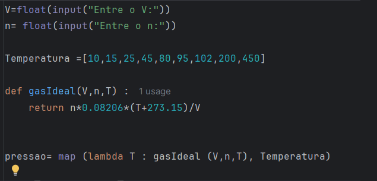
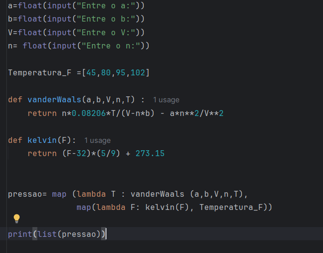
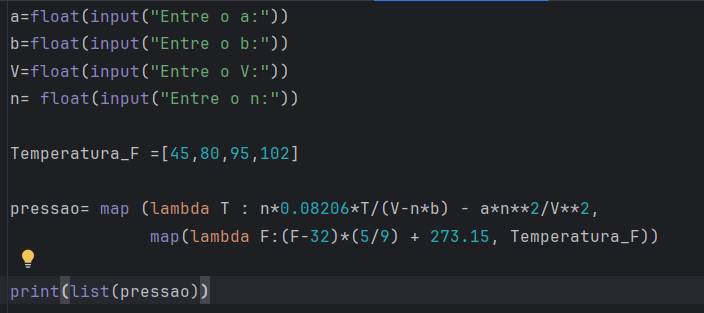
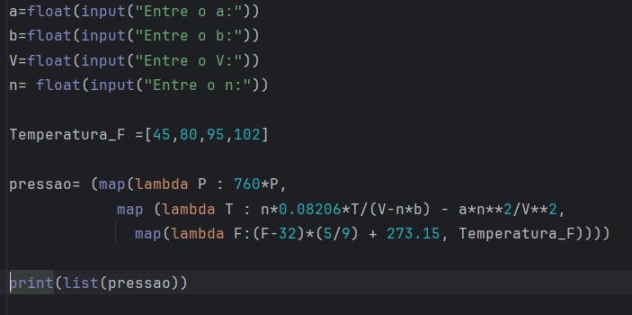

A função map é um recurso do Python que aplica uma determinada função a cada elemento de um iterável (como uma lista, por exemplo). Seu retorno é um iterador contendo os resultados, que pode posteriormente ser convertido em um novo iterável, como uma lista, para exibição ou processamento adicional. No exemplo da Figura 1, temos um array de temperaturas e aplicamos a função gasIdeal a cada elemento desse array, sem a necessidade de utilizar um laço explícito do tipo for. Todo o processamento é feito por meio da função map.

A função map recebe dois argumentos principais:
Essa estrutura faz com que a função seja aplicada elemento a elemento ao conjunto de temperaturas, retornando um iterador com os valores de pressão calculados. A partir desse exemplo simples, evoluiremos gradualmente para encadear múltiplas chamadas da função map, aplicando transformações sucessivas aos dados.
Considere um array de temperaturas em Fahrenheit. Deseja-se calcular a pressão de Van der Waals para um determinado gás, cujo volume, número de moles e constantes de Van der Waals são conhecidos.
Sabemos que:
Na Figura 2, apresentamos o algoritmo que realiza os cálculos utilizando duas chamadas encadeadas da função map.
As funções aplicadas aos dados são:

O encadeamento ocorre da seguinte forma:
Dessa forma, evitamos a criação explícita de estruturas intermediárias e organizamos o processamento como um fluxo de transformações sucessivas. Inicialmente, o código é apresentado com as funções definidas separadamente, destacando claramente cada etapa do cálculo. Em seguida, mostramos que os comandos podem ser simplificados utilizando função lambda na mesma linha onde é chamada a função map, incorporando a lógica diretamente na chamada dessa última função, conforme ilustrado na Figura 3. Essa escolha torna o código mais conciso, embora possa reduzir a legibilidade dependendo da complexidade da expressão utilizada.

Vamos agora acrescentar um novo requisito ao problema: os valores de pressão devem ser apresentados em mmHg, e não em atm. Isso implica a aplicação de uma nova transformação aos dados de saída. Para atender a esse requisito, introduzimos uma terceira chamada encadeada da função map, responsável por converter os valores de pressão de atm para mmHg.
O encadeamento passa então a ter três etapas:
Figura 4, apresentamos o algoritmo com as três chamadas encadeadas da função map. Essa abordagem organiza o processamento como um pipeline funcional de transformações, no qual cada etapa aplica uma operação específica ao conjunto de dados recebido da etapa anterior. Embora o código se torne mais compacto, é importante observar que o excesso de encadeamentos pode reduzir a legibilidade. Em aplicações reais, a escolha entre concisão e clareza deve ser feita com critério, especialmente em projetos colaborativos ou de manutenção prolongada.

O uso encadeado da função map permite estruturar transformações sucessivas de dados de maneira funcional, evitando estruturas explícitas de repetição. Esse tipo de abordagem é particularmente útil quando trabalhamos com séries de dados experimentais, simulações termodinâmicas ou rotinas de pós-processamento em engenharia química, nas quais múltiplas conversões e modelos matemáticos precisam ser aplicados sequencialmente a um conjunto de valores. Mais do que reduzir linhas de código, o encadeamento de map organiza o raciocínio computacional como um fluxo lógico de transformações — algo bastante próximo da forma como estruturamos problemas de engenharia.
Desenvolvimento : Química Programada